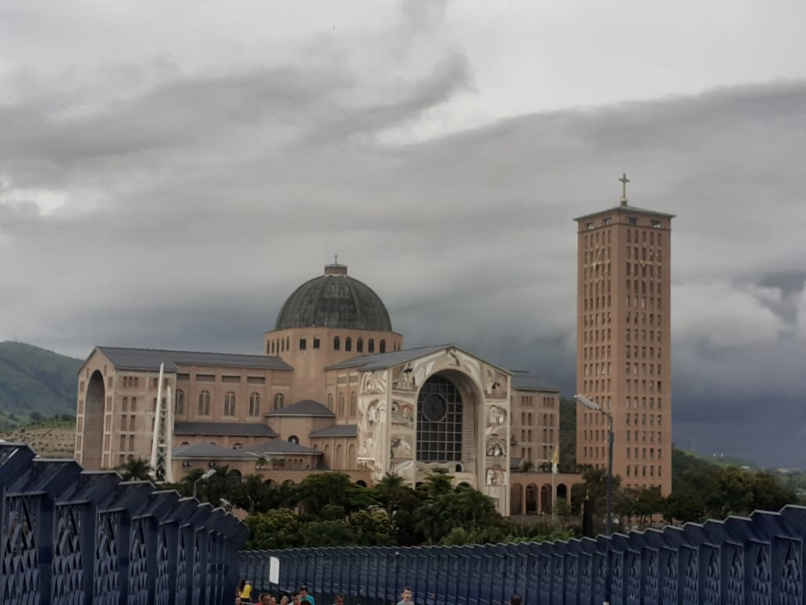
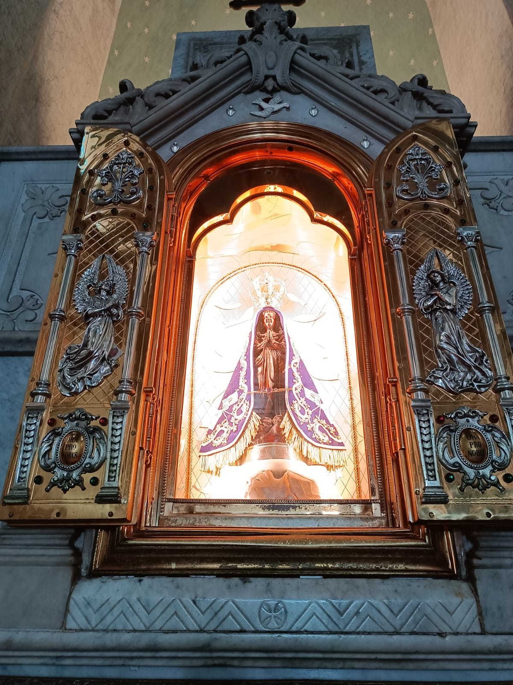
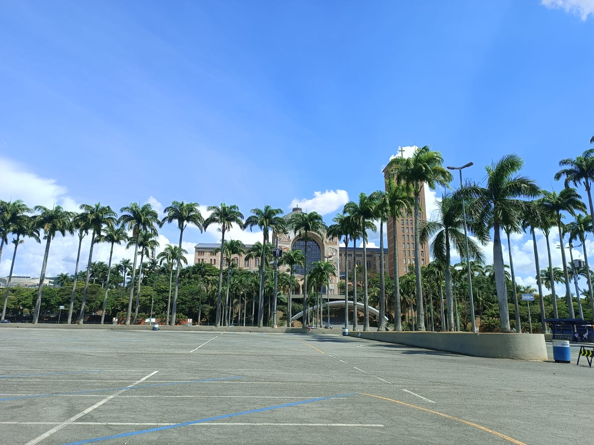
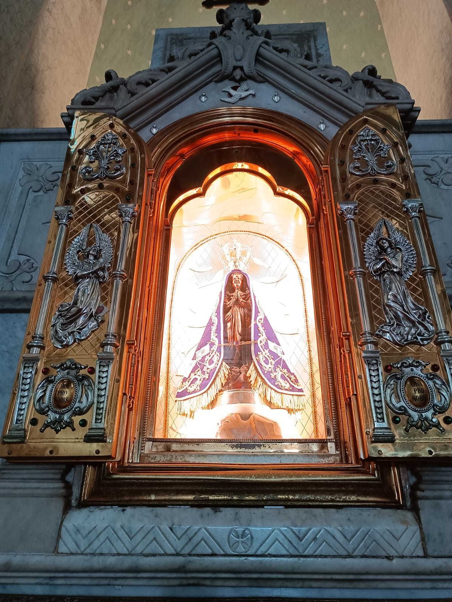
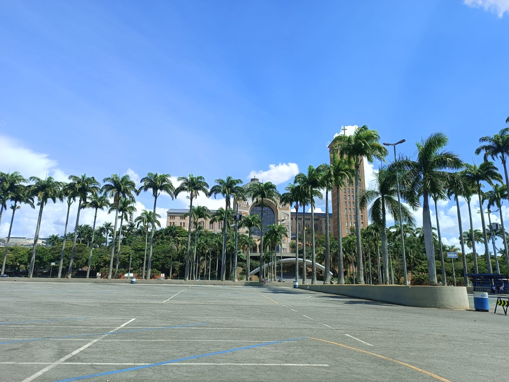
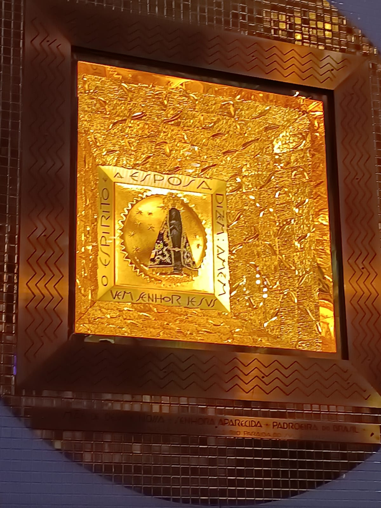
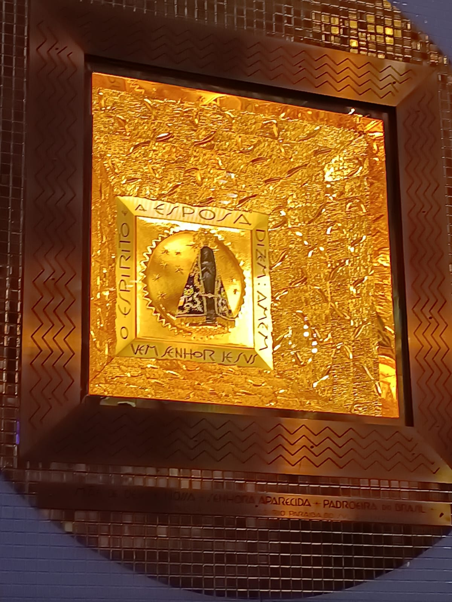

Nossa Senhora Aparecida é a padroeira do Brasil, sendo venerada por milhões de fiéis, a devoção a ela é um símbolo de fé A imagem da santa foi encontrada em um rio por três pescadores, no ano de 1717 no rio paraíba do sul, a imagem foi encontrada incompleta, sendo encontrada primeirante o corpo e logo em seguida a cabeça.
Como ela foi aparecida o nome se encaixou perfeitamente "NOSSA SENHORA APARECIDA" e o episódio foi considerado um milagre e ficou muito conhecida Em outubro de 1717, passava pela região um governador, o futuro conde de Assumar que era muito esperado pelas autoridades locais, que então convocaram todos os pescadores, para que conseguisem uma grande quantidade de peixes para servir ao governador. E ai que aparecem na historia os três pescadores Jõao Alves, Domingos Garcia, Felipe Pedroso, que carregavam consigo uma difícil missão, pois não era época de peixes. Os três pescadores então foram no rio e jogaram suas redes mas até então sem sucesso, até o momento que um deles retira a rede e nela estava o corpo de um imagem, eles aguardaram consigo a santinha mesmo sem a cabeça. Continuaram a pescaria, é então encontraram a cabeça, que se encaixou perfeitamente no corpo, do que então formou a imagem de nossa Senhora da Conceição. A qual seria rebatizada por Nossa Senhora da Conceição Aparecida, pelo fato de ter aparecido no rio. Logo após o ocorrido, no mesmo dia, as redes de pescar se encheram de peixes sendo atríbuido então o primeiro milagre de Nossa Senhora, a qual viria ser a padroeira do Brasil. A imagem primeiramente foi levada a casa de um dos pescadores. Algum tempo depois pela grande quantidade de visitantes, foi construída uma capelinha simples de pau a pique, á qual foi a primeira morada exclusiva da Santa. Então em 1745 foi inaugurada a primeira capela oficial de Nossa Senhora Aparecida.
Quase um século e meio depois Nossa Senhora ganhou sua primeira basílica, a conhecida como basílica velha ou popularmente conhecida como igreja velha. A basílica nova de Aparecida do Norte foi inaugurada em 03 de outubro de 1982. Sua construção começou em 11 de novembro de 1955. A Basílica de Nossa Senhora de Apaprecida é o segundo maior templo católico do mundo, ficando atrás apenas da basílica de São Pedro, no Vaticano.
Nossa Senhora recebeu esse titúlo porque sua imagem apareceu nas águas do rio Paraíba do Sul em 1717. Em 08 de setembro de 1904 Nossa Senhora foi coroada a rainha do Brasil. Em 1931 Nossa Senhora se tornou oficialmente representante do povo Brasileiro. Nossa Senhora da Conceição Aparecida, padroeira do Brasil.
 



 ,
src="5.jpeg">
,
src="5.jpeg">